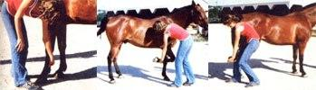
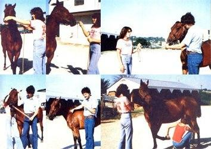
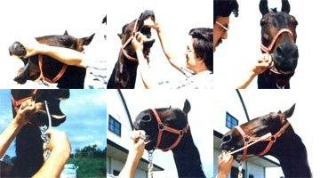
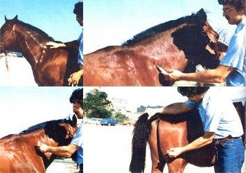

Horses can be more frustrating (and dangerous) to restrain and medicate than any of our other domestic critters. These large animals have exceptionally good peripheral vision, and even the gentlest horse - if not properly restrained or trained - may suddenly use this advantage to unleash an arsenal of flailing hooves and crunching teeth upon the unsuspecting handler.
Of course, horses aren't always that ornery. If you employ the basic equine handling techniques that I'll describe in this article - along with a little caution and a lot of plain old "horse sense" - you should be able to restrain and treat your equine friends without causing excessive discomfort to either the animals or yourself.
First of all, if you plan to work with horses you should smell like a horse. A good horseman or -woman maintains constant physical contact with any animal that he or she treats. To do this, keep your shoulder firmly pressed against the beast's shoulder or flank, depending, of course, upon which end of the critter's body is being treated. This contact will reassure a nervous horse and won't allow it to get enough leverage to kick at you.
Remember, too, that "as goes the horse's head, so goes the horse," and this "head restraint" can't be accomplished without a sturdy halter and lead rope. The flat, woven rope halters seem to be the best choices, especially since the leather and single-strand rope varieties will often break at the least opportune moments (when you have a double handful of angry animal, for instance).
Most horses are accustomed to being led from the left hand side, so hook your lead rope to the left halter ring and grip the rope near the halter with your right hand while holding further down on the lead with your left.
And never, NEVER, let a loop of any rope that's attached to a horse get wrapped around any part of your body. My wife Sue once straddled a fence to hook a lead rope to a horse's halter, with the other end of the lead wrapped around her wrist. The horse suddenly headed for the nearest pasture, taking Sue along with it. That "ride" resulted in some "interesting" sutures (interesting, that is, to the hospital interns) on the portion of my wife's anatomy that cleared the fence last.
A chain fastened to the end of your lead rope will provide several additional means of horse control. It can, as an "attention getter," add noisy emphasis to your restraint techniques. And, if the rattle of the links isn't convincing enough, you can pass the chain through the ring on the left side of the halter, bring it over the bridge of the animal's nose, and hook it to the right halter ring. A downward jerk on this lead will then both make noise and exert pressure on the critter's nose.
If still more restraint is required, pull the "over the nose" chain forward so that it runs under the animal's upper lip. Downward pressure on the rope will then force the chain against this very sensitive area.
And if that doesn't give you enough command of the situation, try a twitch, the ultimate equine "motivator," which operates on the theory that a horse with pressure applied to its nose area won't notice any manipulations of other parts of its body.
You can make a twitch by tying a circle - about 6 inches in diameter - of strong / (at least 1/4-inch-thick), soft cord through a hole in one end of a 2- to 3-foot-long, 4- to 5-inch-diameter stick. For that matter, a serviceable "quickie" twitch can even be fashioned by looping a similar hoop of cord over the striking surface and claws of a hammer, and, of course, various rope and chain twitches are available commercially. To use any of these "convincers," just loop the animal's nose and upper lip with the cord, then twist the handle, but only as much as is necessary to quiet the critter.
Be cautious, though. A horse will sometimes strike forward at a twitch, so the person using one of the instruments should always stand off to the side of the animal (the same side that you plan to work on) and should be sure to hold both the twitch and lead rope securely. A beast can, by shaking its head, turn a loosely held twitch into an enormous and uncontrollable billy club.
Remember, also, that a twitch will only be useful for as long as an animal has feeling in the area that is held, once the beast's lip and nose become numb, in other words, the restraining device will no longer have any effect. So loosen a twitch's pressure periodically, and only reapply that pressure as it's needed.
Yet another "horse holder," the skin curl, provides about as much control as a twitch: Just grab the loose skin on a critter's neck (right in front of its shoulder) and roll it in your hands. This is a very effective restraint technique, but it does require strong fingers.
Once your mount is adequately restrained, you'll have little trouble applying medication. To work on the animal's feet and lower legs, for instance, simply lift the hoof to be treated and cradle it between your knees. A trained horse will usually raise its foot when you apply pressure to the tendons just above the fetlock.
To treat your steed's hind legs, however, you must both lift the hoof and bend the hock. Then, if necessary, you can apply more upward pressure to flex the animal's knee and force the hock up higher. If lengthy hind-foot treatment is required, just straighten the hock - while keeping the knee flexed - and cradle the extended hoof as described above.
Some horses like to prance around when their legs or feet are being worked on. To control this, lift the other leg on the same side as the limb that you want to medicate. If, for example, you need to treat the animal's left hind leg, simply raise the critter's left front foot. (This restraint technique can be a one-man or one-woman operation, but the help of an assistant will make the "medicine man's" job a lot easier.)
A horse's mouth needn't be difficult to work on, either. There is a gap - directly behind the incisors and in front of the molars - where no teeth grow. This "toothless" area is the key to keeping your steed's mouth open. Just hold the patient's head down with your hand, and insert your thumb into the space. Next, as the critter opens its jaws, reach through the gap (without getting your hand between any teeth), and grasp the animal's tongue firmly. If you then pull the tongue out through the "bare" space and gently hold it outside the horse's mouth, you can keep old Dobbin from grinding his or her teeth. After that, it's an easy matter to check the beast's chompers or to administer medication in the form of pills or drenches.
To give those enormous "horse pills" (called boluses), hold onto the critter's tongue and place the pill behind the organ's "top." (If you think in terms of trying to deposit the bolus on the horse's tonsils, you'll probably get it far enough into the beast's mouth.) Experts give pills with their hands, but the novice should use a balling gun to protect his or her fingers.
And remember: Large boluses - if unlubricated can get caught in your horse's throat and cause severe damage or even death. Always lubricate the pill with plenty of vaseline or vegetable oil!
The procedures used in drenching are similar to those employed when giving boluses. Just grip the 'critter's tongue, get the drenching gun or syringe far back into the mouth, pour in the fluid and hold the beast's head level (or tilted at a slight upward angle) until he or she swallows the medicine.
Some horse medications can only be given by injection. And, while these are often within the abilities of the amateur "animal medicine man," they should not be attempted without more information than I can provide in this brief discussion. Read my article, "You Can Too Give That Animal an Injection!," in Mother Earth News, No. 53 (or ask your vet for some lessons) before you try to use a needle on your horse.
Equine subcutaneous injections (Sub-Q) are usually given in the neck region. Simply lift a fold of skin and inject into the hollow "pocket" formed beneath it. Of course, all injection sites should be thoroughly cleaned with alcohol before a shot is administered.
Intramuscular injections (I.M.) can be given in either the neck or thigh. (See the accompanying photographs for precise I.M. locations.) Most horses have at least a four-inch-thick layer of musculature in these areas, which is enough tissue to absorb all but the largest doses of medicine.
When giving a neck injection, place your shoulder firmly against the horse's shoulder (so you'll smell like a horse), and slap the 1-1/2-inch long, 20-gauge needle into the muscle. If the animal jumps, let it settle down and then connect the syringe, aspirate (pull back on) the plunger to check for the blood that will mean you've accidentally hit a vein (immediately remove the needle and start again if blood appears in the hypo's chamber after aspirating), and - if everything is OK- inject the medicine.
The thigh region is best for tail-end injections. Place your shoulder against the horse's rump, push its tail over (or have a helper on the other side pull the fly swisher out of the way), insert the needle into the muscle, connect the syringe, aspirate, and - if no blood appears - inject away.
To the skilled horse handler, the term "horse sense" means more than mere common sense. Horse sense includes the horseman's or -woman's ability to work with the animal as a team. The good horse-owner knows that his or her beast must, often for its own good, respond routinely and easily to whatever it is asked to do.
Sometimes a firm but reassuring voice command can bring about this response, and at other times more forceful restraint may be needed. But in all cases, for its own benefit and for that of its handler, a horse must learn to take its medicine like a man and not be a beast about it. The homestead "horse doctor" can, with a little practice, exercise this necessary control, and easily administer many of the routine medications that his or her steed might ever require.
EDITOR'S NOTE: Dr. Kidd would like to thank Dr. J.D. Hultine, who helped with the restraint photographs and offered valuable assistance and advice.
|
 LEFT TO RIGHT: Train your horse to raise a foot when you press on that leg's tendon. You can hold a horse's front foot in your hand, but it's easier to cradle a rear foot between your knees. |
 TOP, TWO PHOTOS ON LEFT: If you thread a lead rope through the ring on the left side of a horse's halter and pass the loop in the line under the animal's upper lip, a jerk on the rope will get the critter's attention. TOP, RIGHT: A twitch's loop is slipped over a handful of upper lip. ABOVE, LEFT: Stand to one side and hold the twitch firmly. If necessary, two people can grasp the horse's ears, hold its head down, and cross their legs in front of it to keep it from striking forward. ABOVE, TWO RIGHT PHOTOS: The "skin curl" and the "same-side leg lift." |
 TOP, LEFT TO RIGHT: Mouth restraint. Hold the head down with one hand and insert the thumb of the same hand into the gap between the horse's teeth, gently pull the tongue out through the gap and hold it outside the mouth. ABOVE, LEFT TO RIGHT: A balling gun or dose syringe can be used while you mouth-restrain a horse. Hold the tongue out and insert the applicator into the toothless gap, then push the instrument over the tongue. The last photo shows how far the applicator needs to go back into the animal's mouth. |
|
 TOP, LEFT: Outline of the area into which neck I.M. injections are given. TOP, RIGHT: Sub-Q injection site. ABOVE, LEFT: A neck I.M. injection. ABOVE, RIGHT: The thigh injection. For a far more complete discussion of injection techniques and procedures, see "You Can Too Give That Animal an Injection!" in Mother Earth News, No. 53. And if you have the slightest doubt about your ability to administer such forms of medication, let your local veterinarian handle the job for you. |
|
|